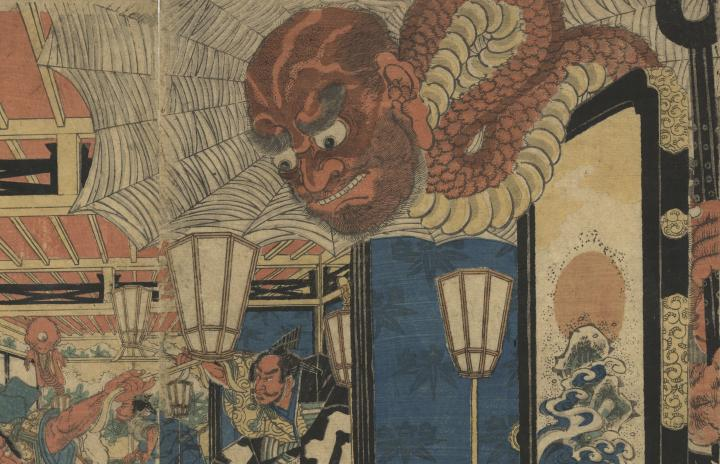

衝立の後ろから首を伸ばす大きな化物。首には鱗と蛇腹があり、金棒を持っている。顔は禿頭で入道のようである。背後に蜘蛛の巣が張っている。
著作者：國長／出典：親書誌：U426_nichibunken_0289：[源頼光館土蜘蛛妖怪図]；ミナモト ライコウ ヤカタ ツチグモ ヨウカイ ズ／日付：2014／資源識別子：U426_nichibunken_0289_0006_0000
Copyright (c)2010- International Research Center for Japanese Studies, Kyoto, Japan. All rights reserved.